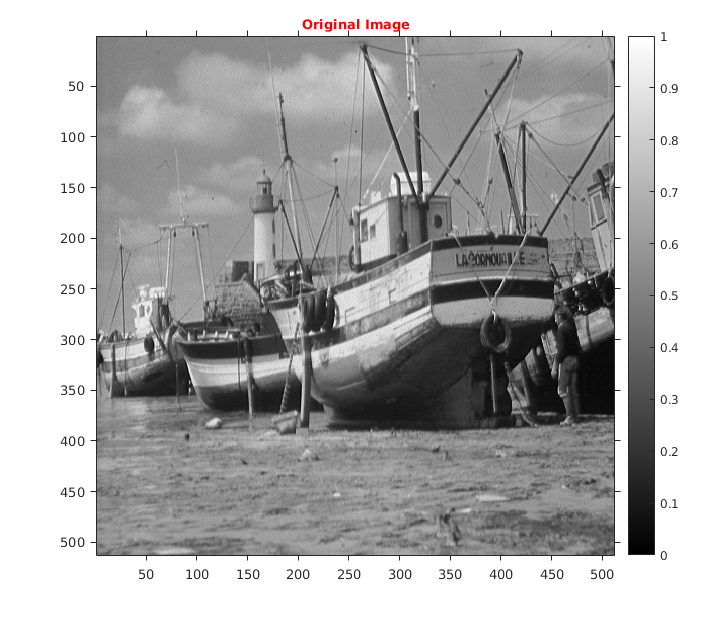
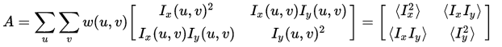
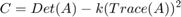
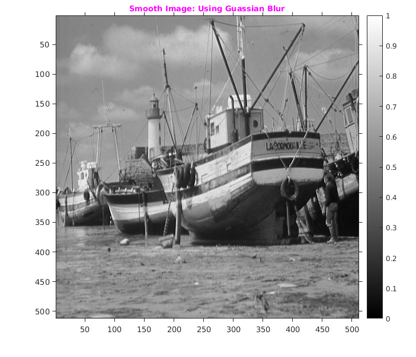
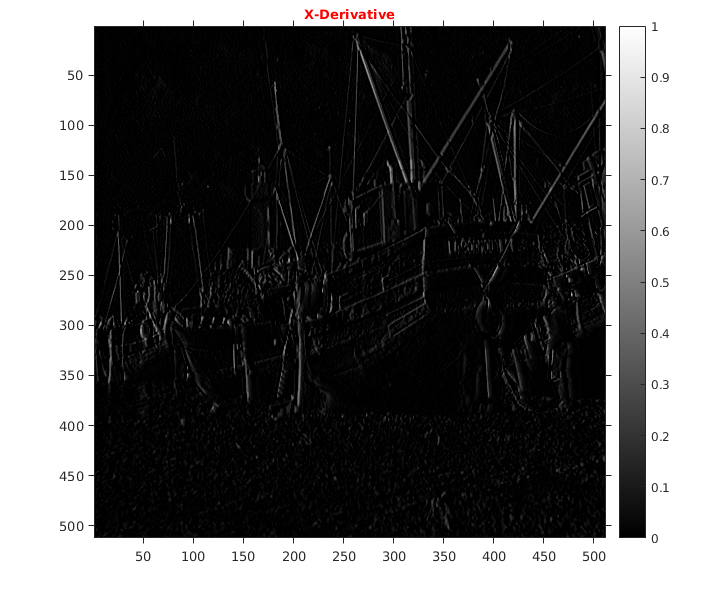
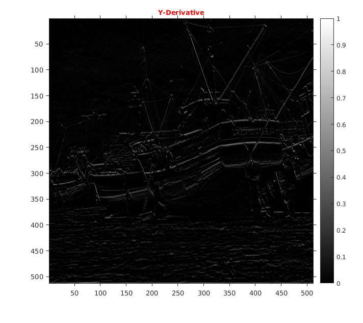
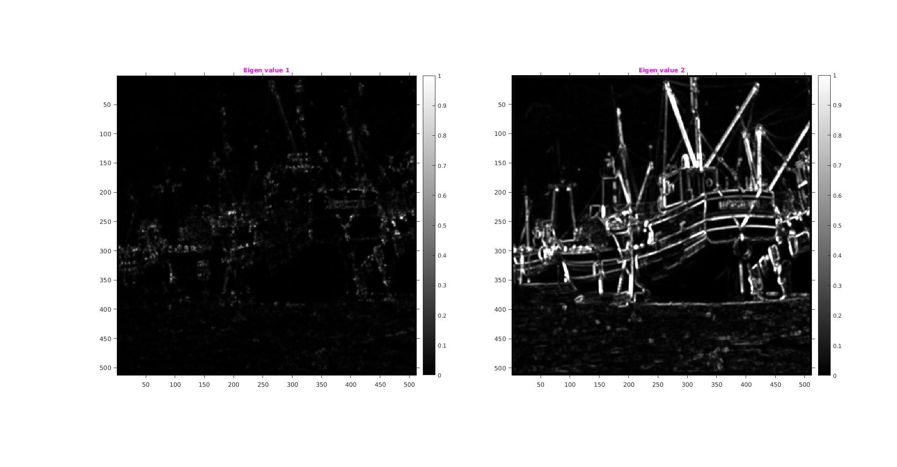
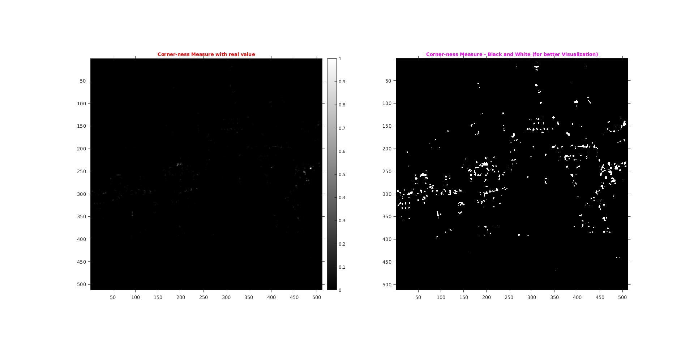
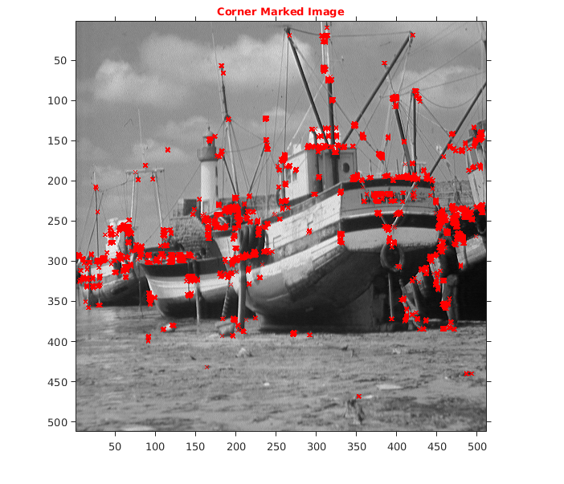
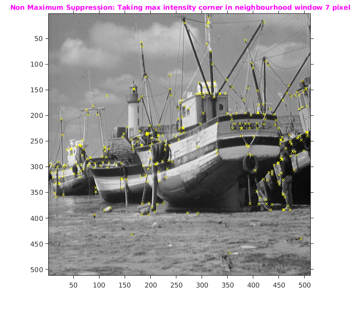

Assignment 3 -- Question 1
CS-663 Group-163059009,16305R011,16305R006
Contents
Initialization
Initialize the boat image.Then rescale the intensities in the image to lie within the range [0, 1].
file='../data/boat.mat';
l = load(file);
img1=l.imageOrig;
img1=img1./255;
cmap=1;
Original image
Showing Original Image
tic; img=img1; figure('name','boat'); imshow(img); title('\fontsize{10}{\color{red}Original Image}'); axis tight,axis on; o1 = get(gca, 'Position'); colorbar(),set(gca, 'Position', o1);
Harris corner detector
myHarrisCornerDetector function take image, then it finds the x-derivative and y-derivative of the image. Now,for a given window size it calculates a structure tensor,given by following formula :

Then using following formula corner-ness C is calculated

Now a pixel is declared a corner if C>0 holds.(Note:But for correction purpose we have talen C>0.01)
Parameters
- windowSize=7
- blurSigma=0.01 (Used to smooth the whole image)
- sigma=1.3 (Used within structure tensor)
- k=0.16 (empirically-tuned constant)
Output:
Returns image marked with corners (corners shown with yellow crosses).
Harris Corner Detector
myHarrisCornerDetector take 5 parameters as input. Returns the below things:
- smooth Image
- cornernessMeasure Image
- List corners coordinate in [y,x] format
- List filtered corners coordinate in [y,x] format.
tic windowSize=7; sigma=1.3; blurSigma=0.01; k=0.16; [smoothImg,cornernessMeasure,corners,filteredCorners,eigenVal1,eigenVal2,Ix,Iy] = myHarrisCornerDetector(img,windowSize,blurSigma,sigma,k); toc
Elapsed time is 10.089673 seconds.
Smoothing of Image
figure('name','Smooth Image'); colormap(gray); imshow(smoothImg); title('\fontsize{10}{\color{magenta}Smooth Image: Using Guassian Blur}'); axis tight,axis on; o1 = get(gca, 'Position'); colorbar(),set(gca, 'Position', o1);
X-Dervative
figure('name','X-Derivative'); imshow(Ix); title('\fontsize{10}{\color{red}X-Derivative}'); axis tight,axis on; o1 = get(gca, 'Position'); colorbar(),set(gca, 'Position', o1);
Y-Derivative
figure('name','Y-Derivative'); imshow(Iy); title('\fontsize{10}{\color{red}Y-Derivative}'); axis tight,axis on; o1 = get(gca, 'Position'); colorbar(),set(gca, 'Position', o1);
Eigen value Image
This shows the eigen values of the two image.
figure('name','Eigen value'); colormap(gray); subplot(121); imshow(eigenVal1); title('\fontsize{10}{\color{magenta}Eigen value 1}'); axis tight,axis on; o1 = get(gca, 'Position'); colorbar(),set(gca, 'Position', o1); colormap(gray); subplot(122); imshow(eigenVal2); title('\fontsize{10}{\color{magenta}Eigen value 2}'); axis tight,axis on; o1 = get(gca, 'Position'); colorbar(),set(gca, 'Position', o1);
Corner-ness Measure
For better Visualization in cornerness image making all intensity values of greater than zero as 1 so that it is visible in image because all values greater than 0 are corners. By this we are making the Black and White Image. White Pixel shows the corner the image.
figure('name','Corner-ness Measure'); colormap(gray); subplot(121); imshow(cornernessMeasure); title('\fontsize{10}{\color{red}Corner-ness Measure with real value}'); axis tight,axis on; o1 = get(gca, 'Position'); colorbar(),set(gca, 'Position', o1); colormap(gray); subplot(122); imshow(cornernessMeasure>0); title('\fontsize{10}{\color{magenta}Corner-ness Measure - Black and White (for better Visualization)}'); axis tight,axis on; o1 = get(gca, 'Position'); set(gca, 'Position', o1);
Mark All corners
Marks all the corner given by harris corner detection algo.
figure('name','Corner Marked Image'); pos = corners; color = {'red'}; markedImage = insertMarker(img,pos,'x','color',color,'size',2); imshow(markedImage); title('\fontsize{10}{\color{red}Corner Marked Image}'); axis tight,axis on; o1 = get(gca, 'Position'); set(gca, 'Position', o1);
Mark Corners by "Non Maximum Suppression"
It selects a maximum intesity point from a given cluster of points. Gives better corner. Radius of the cluster considered is 7.
figure('name','Non Maximum Suppression'); pos = filteredCorners; color = {'yellow'}; markedImage = insertMarker(img,pos,'x','color',color,'size',2); imshow(markedImage); title('\fontsize{10}{\color{magenta} Non Maximum Suppression: Taking max intensity corner in neighbourhood window 7 pixel}'); axis tight,axis on; o1 = get(gca, 'Position'); set(gca, 'Position', o1);